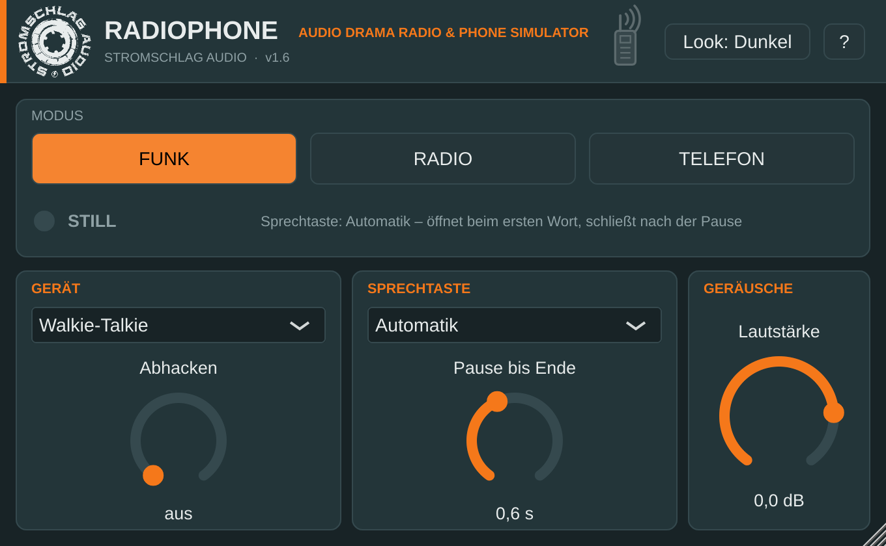
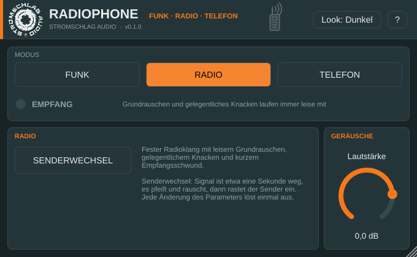
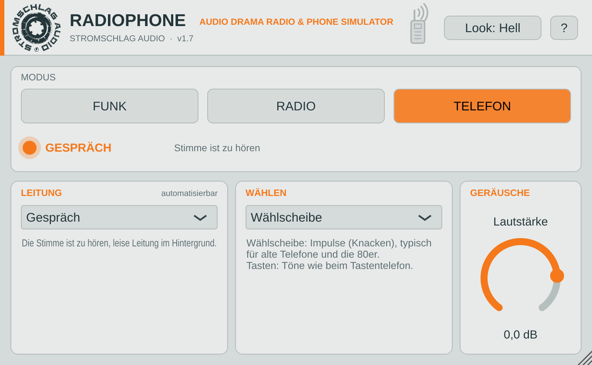

RADIOPHONE
Audio Drama Radio & Phone Simulator · Stromschlag Audio
Ein VST3-Insert-Effekt für Hörspielproduktionen. Er lässt eine Stimme oder Musik klingen, als käme sie aus einem Funkgerät, einem Radio oder einem Telefon, und bringt die Geräusche gleich mit: Tschk und Kschhh der Sprechtaste, Rauschen und Senderwechsel im Radio, Wählton, Wählscheibe und Freizeichen am Telefon.
⬇ Download (Windows, VST3)Was es kann
- Funk mit automatischem Squelch: Walkie-Talkie, Autofunk oder Tischfunk. Die Sprechtaste öffnet beim ersten Wort und schließt erst nach einer einstellbaren Pause – kurze Sprechpausen lösen nichts aus. Wer es genau will, steuert die Taste per Automation.
- Abhacken: schlechter Empfang, bei dem die Verbindung an leisen Stellen hart wegbricht.
- Radio: fester Radioklang mit leisem Rauschen und Knacken, einstellbaren Störungen (schlechter Empfang) und einem Senderwechsel auf Knopfdruck oder per Automation.
- Telefon: Leitungszustände Gespräch, Aufgelegt, Wählton, Wählen, Freizeichen und Besetzt, mit Wählscheibe oder Tasten und dem Klacken des Hörers.
- Fest abgestimmt: kein Mix-Regler, kein Ausgangspegel. Plugin drauf, Modus wählen, fertig. Alle Geräusche sind eingebaut.
- Vergrößerbare Oberfläche von 50 % bis 300 %, hell und dunkel.
Oberfläche



Mehr
Alle Regler, Anwendungsbeispiele, die Versionshistorie und den Quellcode gibt es in der README auf GitHub.